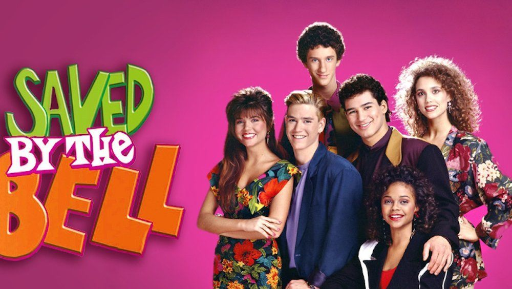
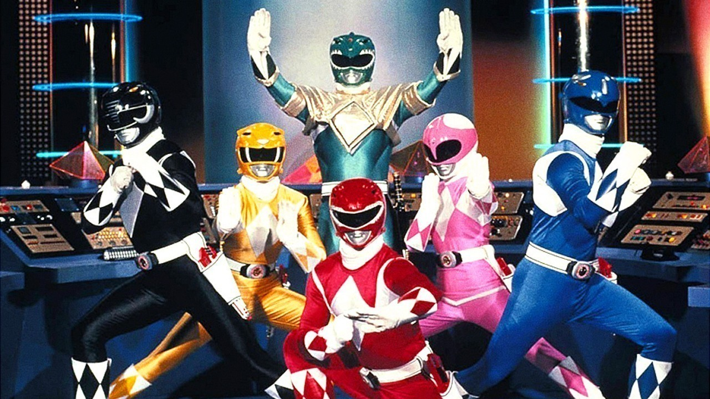

Saved by the Bell

Saved By the Bell focused on Zack Morris and his friends: Samuel "Screech" Powers, Kelly Kapowski, Jessie Spano, A.C. Slater and Lisa Turtle. They had adventures and funny moments at Bayside High School in Palisades, California.
Power Rangers

Five ordinary teens must become something extraordinary when they learn that their small town of Angel Grove - and the world - is on the verge of being obliterated by an alien threat. Chosen by destiny, our heroes quickly discover they are the only ones who can save the planet. But to do so, they will have to overcome their real-life issues and before it's too late, band together as the Power Rangers.